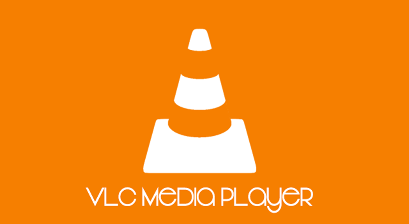
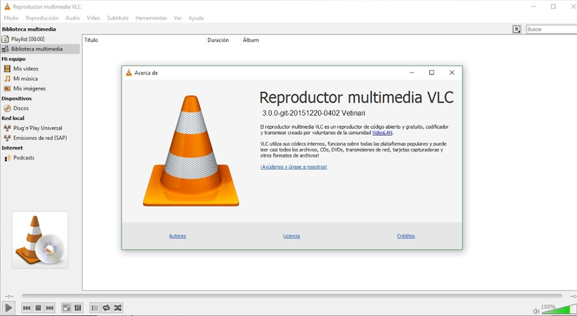
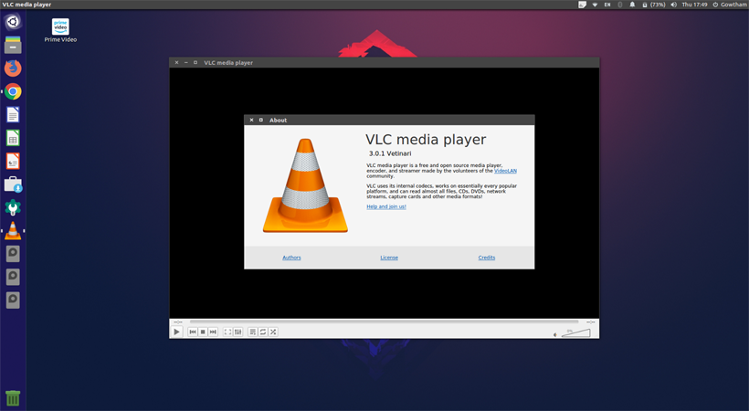

VLC Media Player 3.0.0 Free Download
VLC Media Player 3.0.0 + Portable Download Latest Version for Windows. It is full offline installer standalone setup of VLC Media Player 3.0.0 for 32/64.
VLC Media Player 3.0.0 Overview
VLC Media Player 3.0.0 has got simple and clean looks with no glistening buttons and elements for enhancing the interface. But you can customize the layout of the media player from the Options menu. VLC Media Player 3.0.0 has got a playlist editor which can be docked with the media player or can be left floating around the desktop. Files can be easily managed from the playlist editor. There is a 12-band equalizer has been put at your disposal so that you can adjust the frequency.

Features of VLC Media Player 3.0.0
i) Can enjoy your favorite radio stations.
ii) Supports a wide variety of file formats.
iii) Got a simple and clean looking user interface.
iv) Got a playlist editor which can be docked or can be left floating.
v) Got a 12-band equalizer for adjusting frequency sliders from fine tuning the sounds.

System Requirements of VLC Media Player 3.0.0
Before you start VLC Media Player 3.0.0 make sure your PC meets minimum system requirements.
i) Tested on Windows 7 64-Bit
ii) Operating System: Windows Vista/7/8/8.1/10
iii)Full Setup Size: 75.3 MB, 150 MB
iv) Setup Type: Offline Installer / Full Standalone Setup
v) Compatibility Architecture: 32 Bit (x86) / 64 Bit (x64)
vi) Latest Version Release Added On: 15th Feb 2018
vii) Developers: VLC

VLC Media Player 3.0.0 Free downlaod
Click on the below button to start VLC Media Player 3.0.0. It is full and complete game. Just download and start playing it. We have provided direct link full setup of the game.